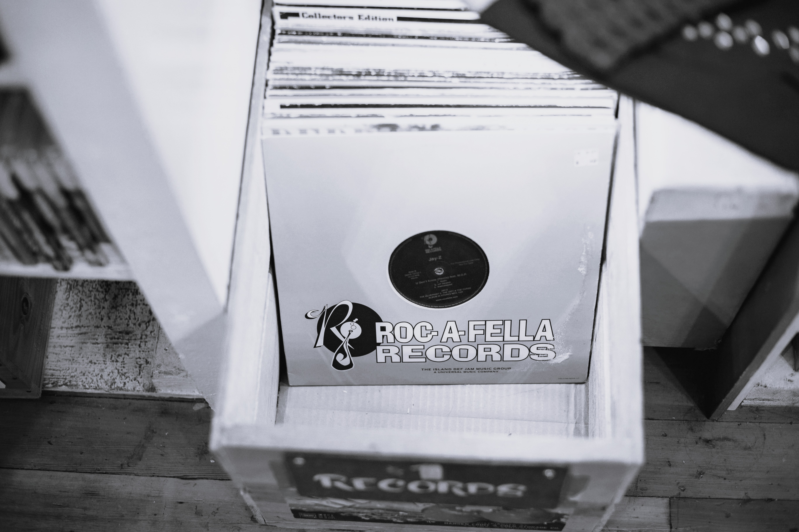

Music for the People, by the People.
A space for the people to directly connect, share, and discover music. Break free from the algorithm and build a more genuine, meaningful way to engage with music.
Join Crate.Explore and Uncover
Discover new music on your own terms and with your own taste. Ditch the algorithm, dig through crated collections, playlists, etc. curated by the people, and dive deeper into music that moves you.
Crate and Share
Crate and share your favorite music from your favorite artists and new music from your crate with the community. Your crate is your crate — curated by you, not for you.
Connect and Support
Connect with and support artists who want to share their music directly with you — no corporations, no contracts, no compromises. The way music was meant to be shared and heard — from the start.
Crate of the Week
This week's crate is "D.I.Y. or Die", a tribute to the people who go to great lengths to reject conformity to remain creatively free and are uncompromisingly and unapologetically true to their vision and values of their craft. Curated by one of the people, A.K.A. @eltallerpino, this crate features bedroom producers who recorded their tracks on tapes, indie bands who pressed their tracks on records, and solo artists who single-handedly wrote, recorded, produced and distributed their tracks to the people.

Daily Digest
Read real articles and spotlights on music that matters. Explore exclusive interviews with artists and about their craft, and the stories behind their tracks.
Read NowRAW Radio
Discover new sounds and scenes with selects from artists raw and refreshingly real. Tune in to artists mixing fresh, novel tracks while chatting about what makes their tracks special.
Tune In